Making Plots With matplotlib/seaborn
Overview
Teaching: 40 min
Exercises: 50 minQuestions
How can I visualize data in Python?
Objectives
Create default
seabornplotsSet universal plot settings.
Modify existing plots.
Change the aesthetics of a plot such as color.
Edit the axis labels.
Build complex plots using a step-by-step approach.
Create scatter plots, box plots, and time series plots.
Create customized plot styles to meet their needs.
Python has powerful built-in plotting capabilities with the matplotlib library.
For this episode, we will be using the [seaborn][https://seaborn.pydata.org/]
package, which is built on top of Matplotlib and interacts well with Pandas.
Just as with the other packages, seaborn needs to be imported. Here we will import
both matplotlib and seaborn. It is good
practice to not just load an entire package such as from seaborn import *,
but to use an abbreviation as we used pd for Pandas:
%matplotlib inline
import matplotlib.pyplot as plt
import seaborn as sns
From now on, the functions of seaborn are available using sns. and matplotlib as plt..
For the exercise, we will use the surveys.csv data set, with the NA values removed
import pandas as pd
surveys_complete = pd.read_csv('data/surveys.csv')
surveys_complete = surveys_complete.dropna()
Plotting with matplotlib/seaborn
The seaborn package supports the creation of complex plots from data in a
dataframe. It uses default settings, which help creating publication quality
plots with a minimal amount of settings and tweaking.
Before we use the seaborn package, let’s just do the simplest plot we can do in Python
using the built-in matplotlib. Most plots in matplotlib are based on explicitly passing the arrays for the x-values
and y-values that will make up the points or lines of the plots. For example, to plot the weight versus the hindfoot length
from our surveys data we will need to extract them from the dataframe and pass them to the plotting function:
plt.scatter(x=surveys_complete["weight"], y=surveys_complete["hindfoot_length"])
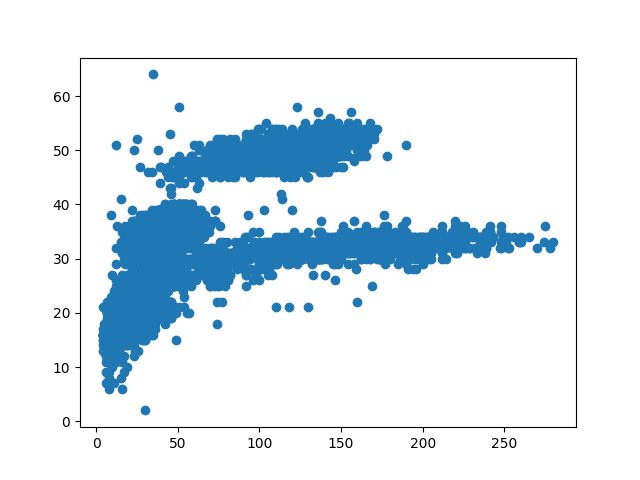
Because seaborn integrates well with pandas we can define our data object (the dataframe) and then assign column names to
x and y values of the plot. So the same thing with seaborn is:
sns.scatterplot(data=surveys_complete, x="weight", y="hindfoot_length")
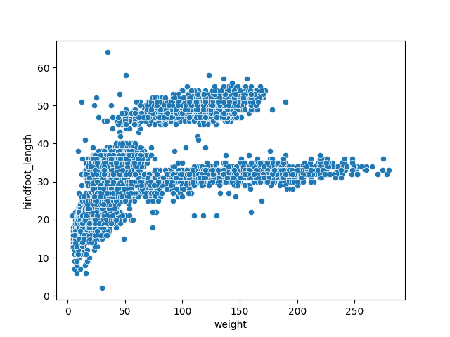
Building your plots iteratively
Building plots and interactive visualisation is typically an iterative process. So we would plot something initially but then depending on the results modify various parameters to, for example, see more clearly what we want.
We start by the same scatterplot we did before:
sns.scatterplot(data=surveys_complete, x="weight", y="hindfoot_length")
Then, we start modifying this plot to extract more information from it. For instance, we can add transparency (alpha) to avoid overplotting:
sns.scatterplot(data=surveys_complete, x="weight", y="hindfoot_length", alpha=0.5)
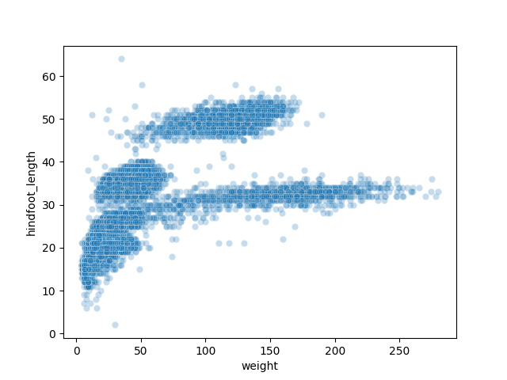
We can also add a different colour for all the points:
sns.scatterplot(data=surveys_complete, x="weight", y="hindfoot_length", alpha=0.25, color="red")

Or to color each species in the plot differently, we can map the species_id column to the color (hue):
sns.scatterplot(data=surveys_complete, x="weight", y="hindfoot_length", hue="species_id", alpha=0.25)

Apart from the adaptations of the arguments and settings of the seaborn plot, additional plot-level elements can be added and controlled as well. Here, it might be useful to have access to plot-level objects like the axes to set things like axes labels and so on. So we will create a figure and axes object with the built-in matplotlib so we have access to them and then pass them to seaborn for plotting. We will then use these objects to change the label of the x axis and the legend appearance:
fig = plt.figure()
ax = fig.add_subplot()
sns.scatterplot(data=surveys_complete, x="weight", y="hindfoot_length",
alpha=0.5, hue="species_id", ax=ax)
ax.set_xlabel("Weight (g)")
plt.legend(ncol=3)
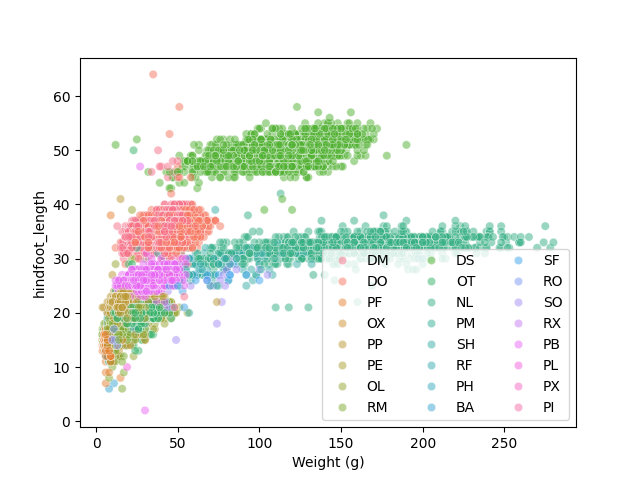
Challenge - Bar plots
Working on the surveys_complete data set, use the plot-id column to create a bar-plot that counts the number of records for each plot. (Check the documentation of the barplot to handle the counts)
(see in general [API reference][https://seaborn.pydata.org/api.html] to find the appropriate function).
Answers
sns.barplot(data=surveys_complete, x="plot_id", y="weight", hue="sex")
Plotting distributions
Visualizing distributions is a common task during data exploration and
analysis. To visualize the distribution of weight within each species_id
group, a boxplot can be used:
sns.boxplot(data=surveys_complete, x="species_id", y="weight")
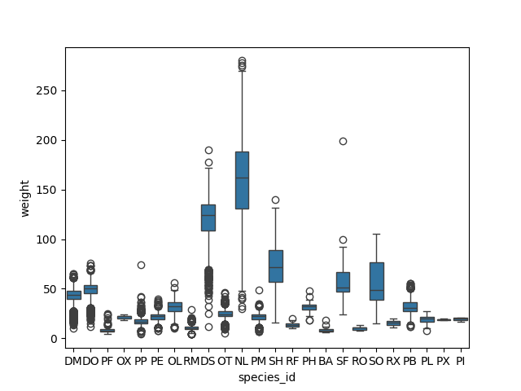
By plotting the points of the individual observations, we can have a better idea of the number of measurements and of their distribution:
sns.stripplot(data=surveys_complete, x="species_id", y="weight")
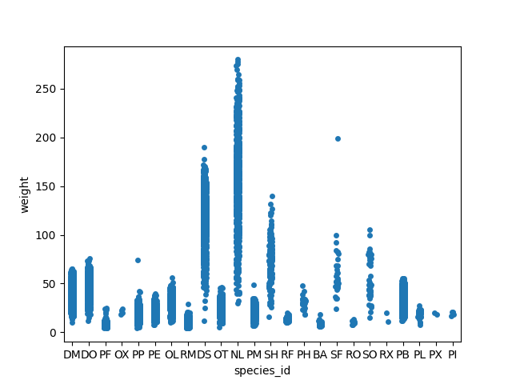
Sometimes boxplots can hide the ‘shape’ of the distribution. Violinplots can be used instead. See the full tutorial for plotting distribution data using seaborn including histograms and 2D distributions.
Plotting time series data
Let’s calculate number of counts per year for each species. To do that we need
to group data first and count the species (species_id) within each group.
yearly_counts = surveys_complete.groupby(['year', 'species_id'])['species_id'].count()
yearly_counts
When checking the result of the previous calculation, we actually have both the
year and the species_id as a row index. We can reset this index to use both
as column variable:
yearly_counts = yearly_counts.reset_index(name='counts')
yearly_counts
Timelapse data can be visualised as a line plot with years on x
axis and counts on the y axis.
sns.lineplot(data=yearly_counts, x='year', y='counts', hue='species_id')
plt.legend(ncol=3)
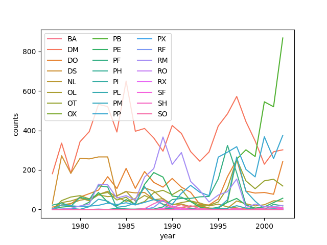
Faceting
As with other plotting libraries, seaborn also has a
special technique called faceting that allows to split one plot into multiple
plots based on a factor variable included in the dataset.
Consider our scatter plot of the weight versus the hindfoot_length from the
previous sections:
sns.scatterplot(data=surveys_complete, x="weight", y="hindfoot_length")
We can now keep the same code and at the facet_wrap on a chosen variable to
split out the graph and make a separate graph for each of the groups in that
variable. As an example, use sex:
sns.relplot(data=surveys_complete, x="weight", y="hindfoot_length",
col="sex", hue="species_id")
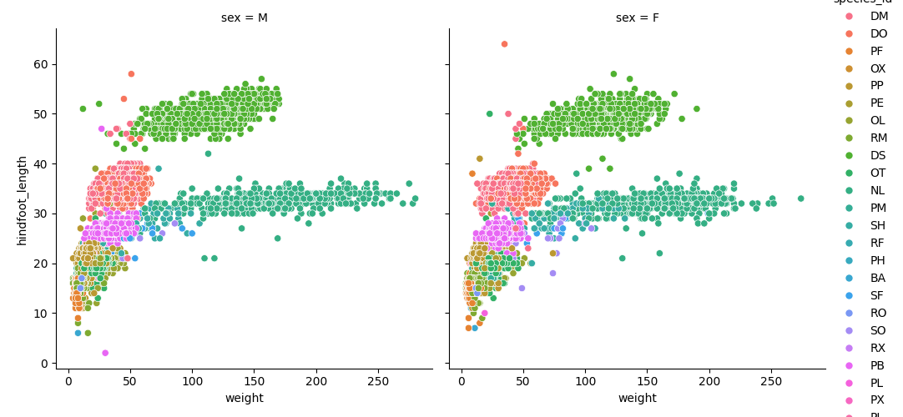
Note that we switched to the relplot figure-level function to do the facetting instead of using axis-level functions like
scatterplot and lineplot.
We can apply the same concept on any of the available categorical variables:
sns.relplot(data=surveys_complete, x="weight", y="hindfoot_length",
col="plot_id", hue="species_id", col_wrap=5)
Note that we use the col_wrap parameter to wrap the plots to multiple rows.
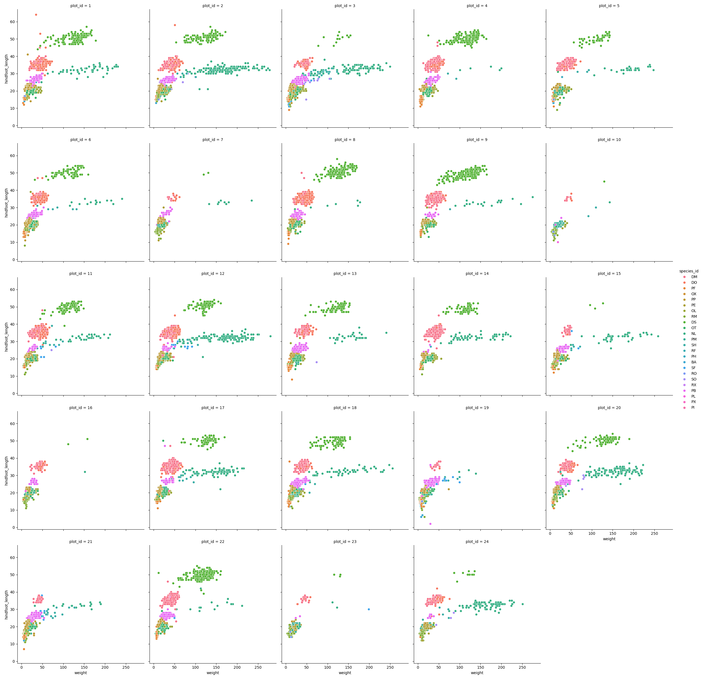
Challenge - facetting
Create a separate plot for each of the species that depicts how the average weight of the species changes through the years.
Answers
yearly_weight = surveys_complete.groupby(['year', 'species_id'])['weight'].mean().reset_index() sns.relplot(data=yearly_weight, x="year", y="weight", col="species_id", col_wrap=5, kind="line")
Challenge - facetting
Based on the previous exercise, visually compare how the weights of male and females has changed through time by creating a separate plot for each sex and an individual color assigned to each
species_id.Answers
yearly_weight = surveys_complete.groupby(['year', 'species_id', 'sex'])['weight'].mean().reset_index() sns.relplot(data=yearly_weight, x="year", y="weight", col="species_id", col_wrap=5, kind="line", hue="sex")
Further customization
The plots of seaborn, matplotlib, and other packages in Python can be customised heavily. It takes one look at the API of your favourite plot function to see the number of parameters it accepts. Then matplotlib as well on top of that has its own functions to modify its behaviour. In the end, the final look of the plots is a matter of personal preference or it can be dictated by external factors like publication standards.
Take for example a barchart that plots the counts of surveys per year:
sns.countplot(data=surveys_complete, x="year")
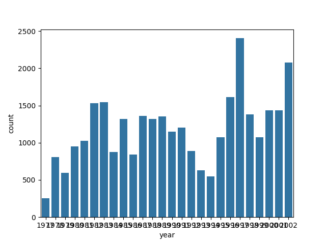
Notice that we use the year here as a categorical variable.
However, by doing so, we have the individual year labels overlapping with each other.
Functions in the matplotlib axis class provide a way to rotate the text of the x-axis labels:
fig = plt.figure()
ax = fig.add_subplot()
sns.countplot(data=surveys_complete, x="year", ax=ax)
ax.tick_params(axis='x', rotation=90)
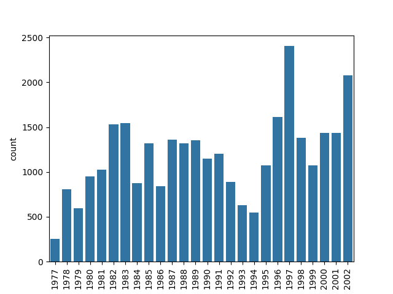
Challenge - customization
Please take another five minutes to either improve one of the plots generated in this exercise or create a beautiful graph of your own.
Here are some ideas:
- See if you can change thickness of lines for the line plot (in the time-series plotting part).
- Can you find a way to change the name of the legend? What about its labels?
- Use a different color palette (see https://seaborn.pydata.org/tutorial/color_palettes.html)
After creating your plot, you can save it to a file in your favourite format. You can easily change the dimension (and its resolution) of your plot by adjusting the appropriate arguments when you create the figure object.
fig = plt.figure(figsize=(3, 2), dpi=300)
ax = fig.add_subplot()
sns.scatterplot(data=surveys_complete, x="weight", y="hindfoot_length", alpha=0.25, hue="species_id", ax=ax)
plt.savefig("scatterplot.png")
Key Points